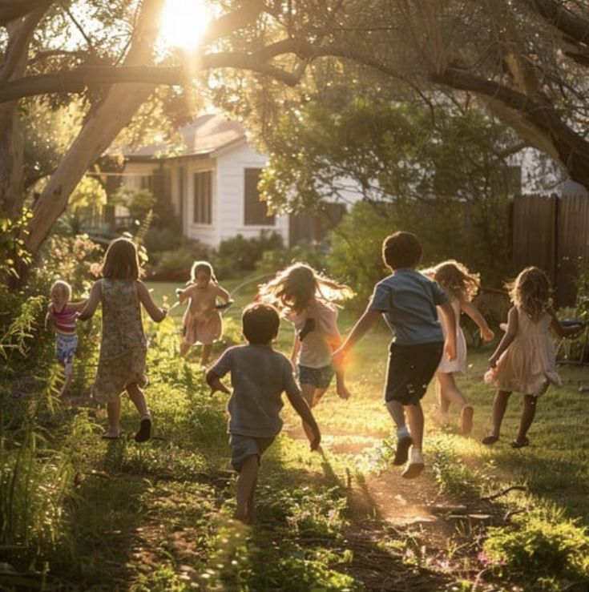
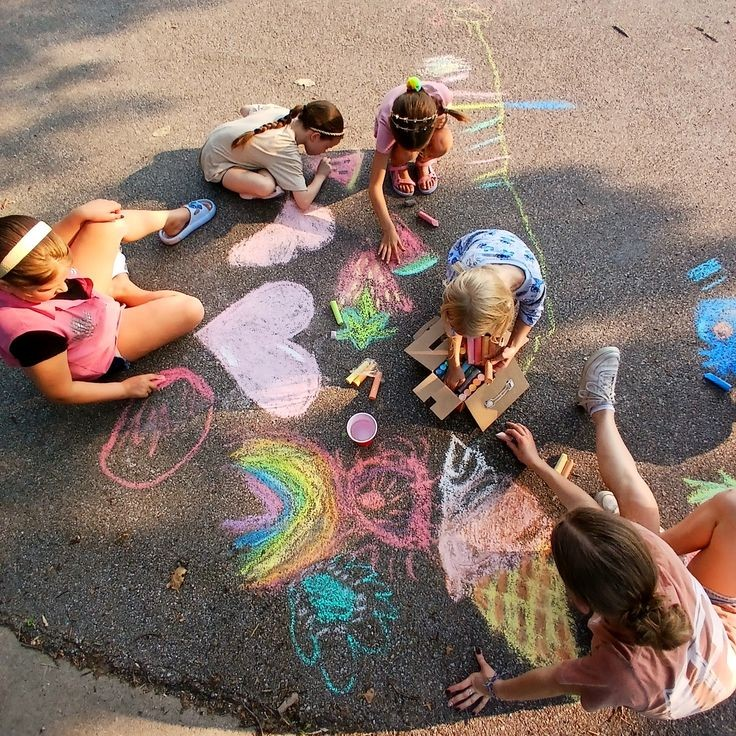
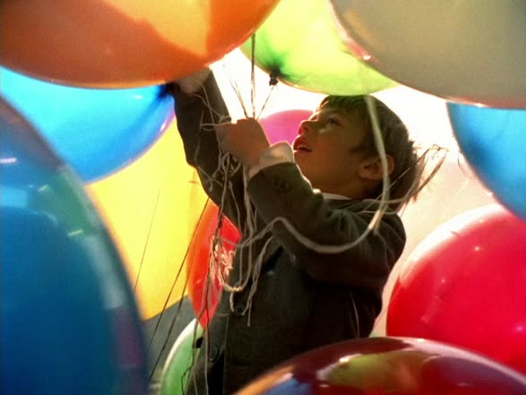
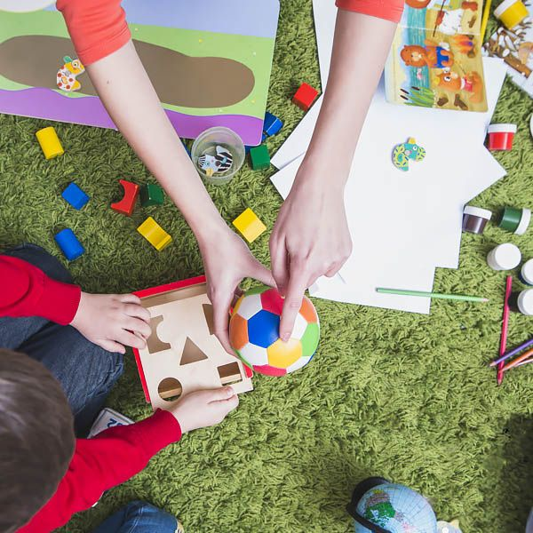
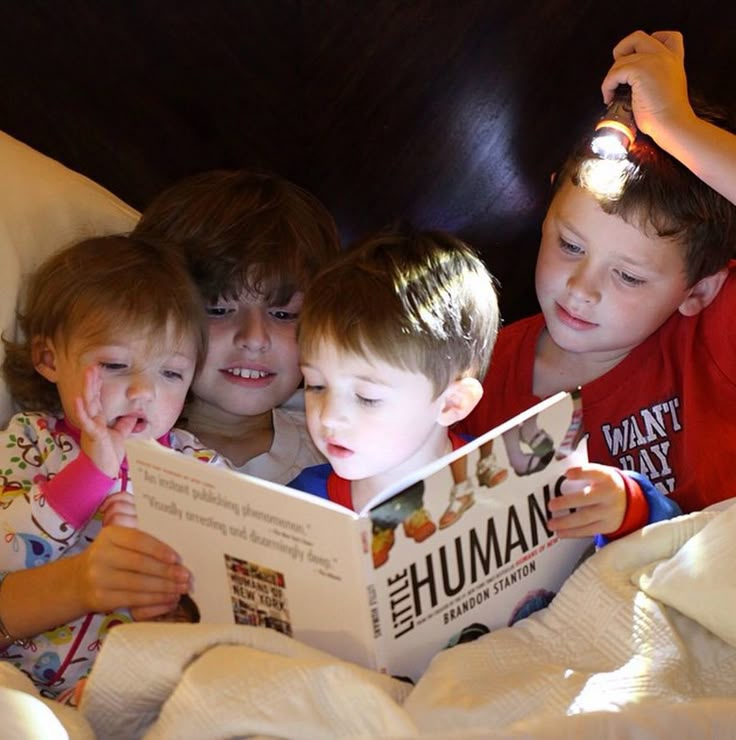

Актуальные мероприятия и новости

Региональное отделение ВОРДИ по Оренбургской области приглашает на родительскую встречу в рамках проекта «Создание условий для обучающихся с расстройством аутистического спектра в образовательных организациях г. Оренбурга». Проект реализуется при поддержке министерства регионального развития Оренбургской области.
Место: Штаб общественной поддержки (г. Оренбург, ул. Цвиллинга, д. 1)
Вы сможете задать волнующие вопросы, поделиться опытом и получить консультацию специалистов. По всем вопросам — РО ВОРДИ по Оренбургской области.

11:00 · ~15 участников · Штаб общественной поддержки, ул. Цвиллинга, 1
РО ВОРДИ по Оренбургской области приглашает на методическую встречу в рамках проекта по созданию условий для обучающихся с РАС. Обсудим современные методы и подходы, комфортную образовательную среду, стратегии коммуникации и практические рекомендации для инклюзивного обучения. Приглашаются учителя, воспитатели, специалисты сопровождения, психологи.

14:00 · ~40–45 участников · Штаб общественной поддержки, ул. Цвиллинга, 1
Права детей с РАС на образование, формы обучения в Оренбурге, взаимодействие со школой, психологическая поддержка семьи. Консультации специалистов. РО ВОРДИ по Оренбургской области.


Совместно с АНО «Каждый Важен» проводим занятия для нормотипичных школьников об особенностях детей с РАС.
Команда центра сопровождает ресурсные классы в МАОУ «СОШ № 91» и школе-интернате № 4.
Следите за анонсами в наших соцсетях или звоните по телефону центра
Контакты →